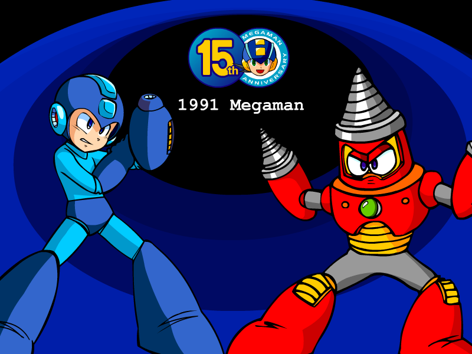
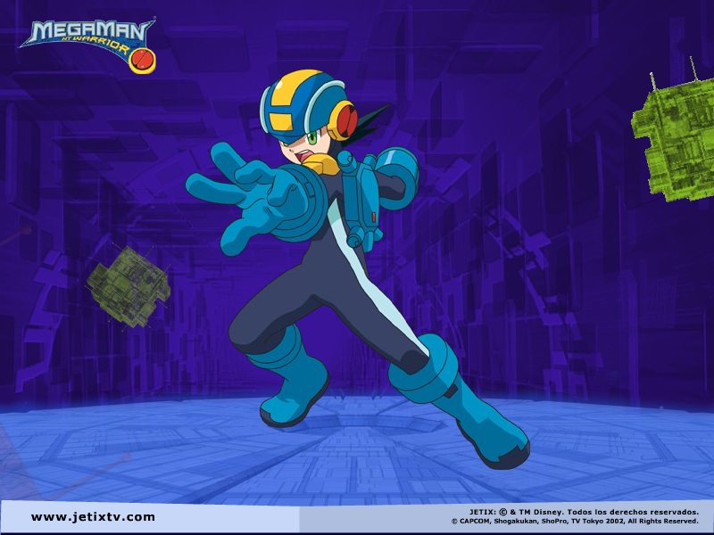

Mega Man Screensavers

Mega Man 15th Anniversary

DOWNLOAD
 .exe file zipped (449 KB)
.exe file zipped (449 KB)
Megaman NT Warrior Screensaver 1 (jetix.com.br/jetixtv.com)

Note: This is a 16-bit program and requires special programs to install on 64-bit Windows, such as otvdm.
DOWNLOAD
.sit file (Mac OS 9) (jetix.com.br) (1.33 MB)
.sit file (Mac OS X) (jetix.com.br) (1.20 MB)
.exe file zipped (Windows) (jetixtv.com) (983 KB)
.sit file (Mac OS 9) (jetixtv.com) (1.34 MB)
.sit file (Mac OS X) (jetixtv.com) (1.20 MB)
Megaman NT Warrior Screensaver 2 (jetix.com.br/jetixtv.com)

Note: This is a 16-bit program and requires special programs to install on 64-bit Windows, such as otvdm.
DOWNLOAD
.sit file (Mac OS 9) (jetix.com.br) (2.49 MB)
.sit file (Mac OS X) (jetix.com.br) (2.35 MB)
.exe file zipped (Windows) (jetixtv.com) (2.05 MB)
.sit file (Mac OS 9) (jetixtv.com) (2.49 MB)
.sit file (Mac OS X) (jetixtv.com) (2.35 MB)